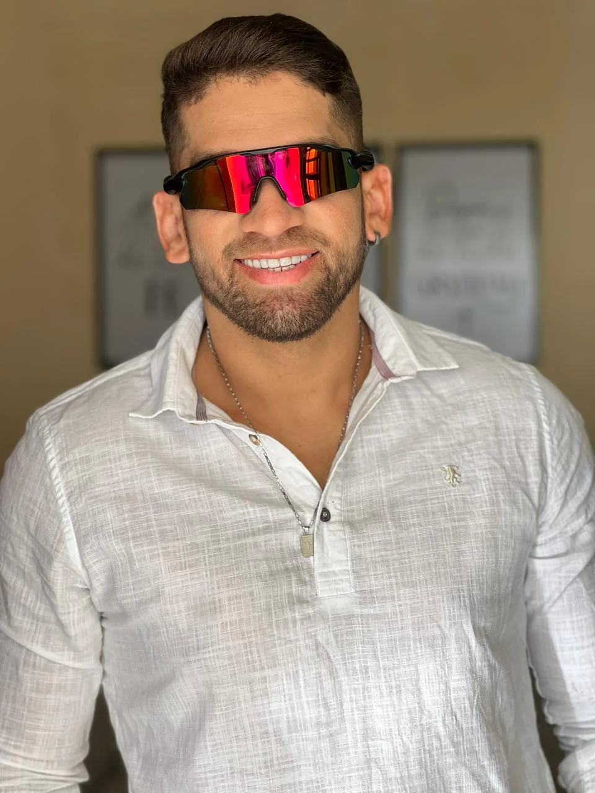
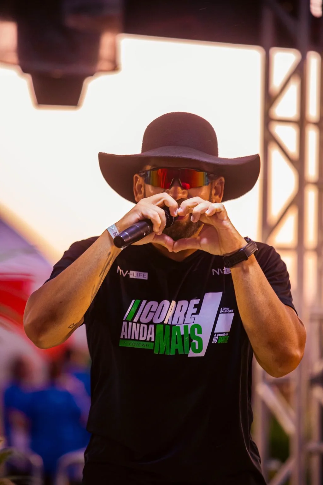
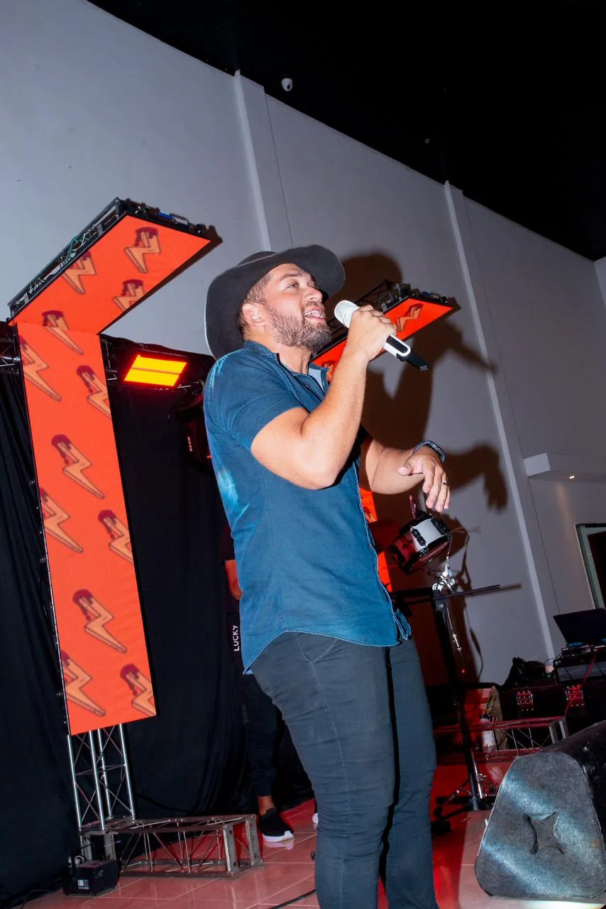
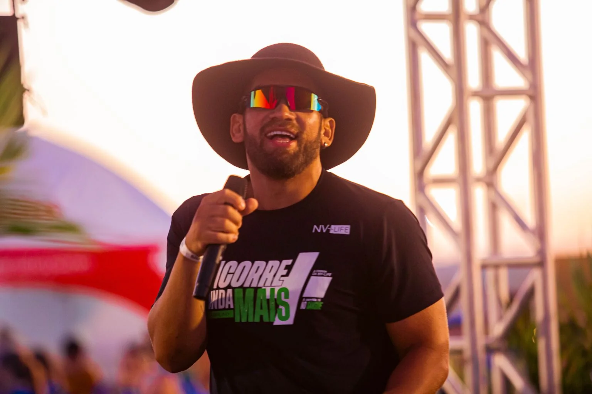

01
Felipe Santos + DJ
DJ integrado à apresentação para criar transições, momentos de pista e dinâmica durante o show.
FELIPE SANTOS • SHOW AO VIVO
Música, presença de palco e uma experiência pensada para fazer seu público cantar, dançar e viver o momento.
Felipe Santos leva para cada evento uma apresentação dinâmica, envolvente e feita para aproximar o artista do público.
Com repertório versátil, interação e presença de palco, o show se adapta ao clima da festa — do momento mais elegante à pista cheia. A proposta é criar uma experiência que tenha a cara do seu evento.
Quero falar sobre meu evento →
Um formato integrado para entregar música ao vivo com dinâmica de pista, interação e presença visual.
DJ integrado à apresentação para criar transições, momentos de pista e dinâmica durante o show.
Percussão ao vivo para aumentar a energia e dar mais movimento à apresentação.
Iluminação integrada ao show para valorizar o palco e criar diferentes atmosferas.
Uma duração pensada para construir a experiência, manter o público envolvido e fechar em alta.
O show pode ser contratado para diferentes formatos e momentos. Conte o que você está planejando.
Uma apresentação feita para funcionar tanto no palco quanto na pista — com imagem, luz, interação e música.

CONTEÚDO EM VÍDEOAssistir no YouTube↗

Preencha os dados. Ao enviar, o WhatsApp será aberto com uma mensagem pronta e organizada com as informações do seu evento.